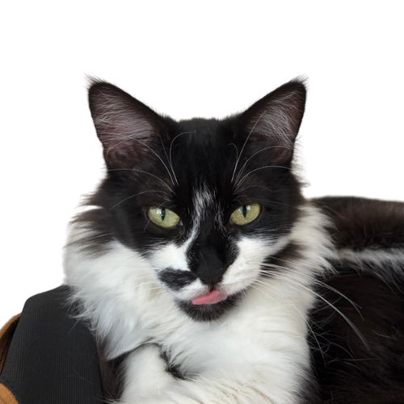
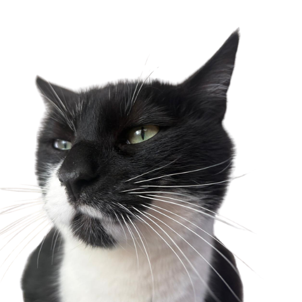
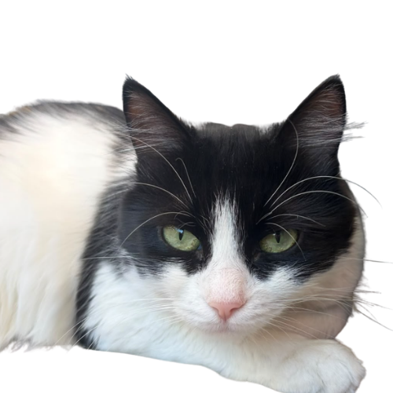

About me
Hi! I'm a graduate student in the Master in Management and Technology (MMT) program at the Technical University of Munich, specializing in Computer Engineering as my major and Economics & Econometrics on the side. I have a B.S. in Industrial Engineering from METU, with coursework spanning operations research and mathematical optimization.
Before Munich I worked as a business analyst in a product management team, on pricing, promotion and markdown optimization products. During my undergraduate years I also spent time in research: active learning and Bayesian optimization at Bilkent, and a summer at the University of Groningen on the probability behind a materials science problem. I want to keep working on problems that are uncertain enough to be interesting and real enough that someone has to act on the answer.
My goal is to create meaningful change and improve the lives of others. I want to use my work to make the world a little better than I found it.
Education
- 2026 — 2028
- M.Sc. Management and Technology Technical University of Munich, computer engineering major, economics and econometrics
- 2019 — 2025
- B.S. Industrial Engineering Middle East Technical University, GPA 3.45/4.00, Honors
- 2015 — 2019
- High School Diploma TED Eskişehir College, graduation score 98.23/100, full tuition merit scholarship
Languages
- Turkish
- Native
- English
- C1, IELTS 8.0
- Korean
- TOPIK II, Level 5
- German
- Beginner, currently working on it :)
Research
Interests
- Optimization
- Operations research
- Artificial intelligence
- Decision science
- Analytics
- Decision-making under uncertainty
Work
Random nanowire networks
Nanowire networks conduct electricity through wires thrown down at random, which makes their electrical behaviour hard to predict. I modelled the network as a random graph: wire centres uniform on the unit square, orientations uniform, junctions as vertices. Working on the torus, I derived the intersection probability of two wires analytically and checked it against Monte Carlo simulation, which gives the expected number of junctions for a given wire count and length.
From there the question becomes a resistance distance problem, which is where the operations research side comes in. Resistance distance is a graph-theoretic quantity that also turns up in flow and network problems, and I computed it through the Moore-Penrose pseudoinverse of the graph Laplacian, using the equivalence between resistance and the commute times of random walks to reason about the network without simulating every path. The literature review ran from percolation theory to optimal transport, which turns out to connect back to effective resistance on graphs.
Active learning in large scale vector optimization problems
Joint Entropy Search is a Bayesian optimization method for expensive black-box functions, but it assumes the usual componentwise comparison of objectives. We extended it to vector optimization, where the ordering comes from a convex cone and the set of optimal points grows or shrinks with the cone angle.
Two pieces had to be rebuilt. Box decomposition, which JES uses to compute the cumulative distribution, does not survive the switch to cones, so I worked on a replacement using confidence ellipsoids, bounding boxes and a matrix representation of the cone. NSGA-II, used inside the method to find the Pareto set, needed its dominance comparisons redefined before it would return cone-based Pareto points.
Projects
Dynamic planning of shared scooter field operations
A 2,000-scooter fleet needs battery swaps and repositioning every shift, and the field teams were deciding what to do next by eye: which scooter, in what order, on which route. We built a decision support system that selects the tasks worth doing in a shift and sequences them, replacing manual routing with an optimization-based approach that the operator could run each morning.
+70.4% field productivity in tasks per kilometre driven, and 40% fewer scooters left stranded at critical battery levels.
Personal
I grew up in a small town in Türkiye. In high school I started commuting to Eskişehir every day, and somehow those long drives became one of my favourite parts of that time. I still love a good road trip.
Both sides of my family go back generations to Bulgaria, and my grandfather was born there. I grew up surrounded by that Balkan culture, and it still shows in the small, warm rituals I never want to lose, like putting on a martenitsa every March.
My first year of university landed in the middle of the pandemic, so instead of classrooms and new people I spent most of it in front of a screen at home.
I care about human rights, animal rights and gender equality, and about keeping myself and the people around me educated on all three.
Fun facts about me
I taught myself Korean, almost to a high level, starting purely from watching K-dramas, which still makes me laugh a little. Learning languages has become one of my favourite hobbies. I am very excited about learning German these days.
Travelling is the first thing I reach for with free time. My last trip was to Japan, and Kyoto climbed high up my list of favourite cities.
I love any kind of arts and crafts: painting, drawing, crochet, ceramics, anything that ends with something real I can hold, use, or gift to someone I love.
I also like trying things I'm not good at. I did taekwondo for a year and a half at university and graduated just before earning my blue-green belt, and I've given bouldering a go, mostly for the pleasure of being bad at something new.
Three cats live with us at my hometown, the oldest just turned 10. They all have their own story and I feel lucky to have them around.


